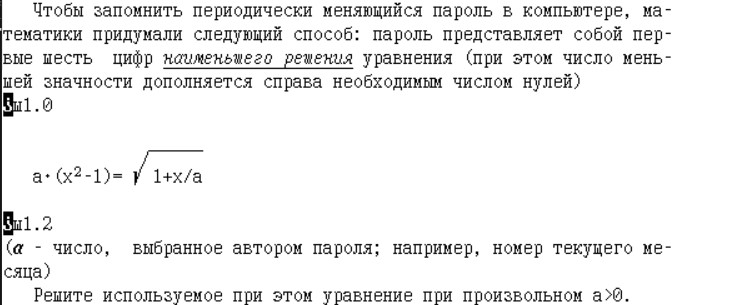
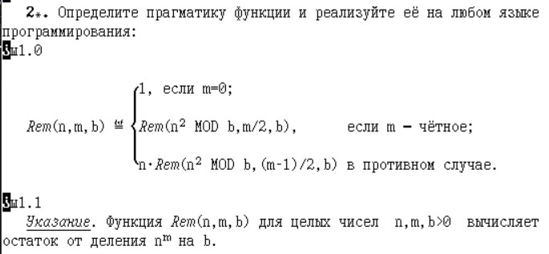

Здесь представлены работы по дисциплине "Защита информации" за 3 курс.
Задание 9.1

Задание 9.2

Задание 3.1(1)
Реализовать протокол криптографической системы с открытым ключом.
Задание 3.1(2)
Реализовать протокол криптографической системы без передачи ключей.
Задание 3.2
Написать и отладить набор подпрограмм, реализующих базовые алгоритмы, используемые в криптосистеме RSA:
Задание 3.4
Реализовать протокол Рабина.
Задание 2.1(1)
Реализовать протокол электронной подписи RSA без секретной передачи сообщения.
Задание 2.1(2)
Реализовать протокол электронной подписи RSA без секретной передачи сообщения (с хэшированием).
Задание 2.1(3)
Реализовать протокол электронной подписи RSA совместно с секретной передачи сообщения.
Задание 2.1(4)
Реализовать протокол аутентификации.
Задание 2.1(5)
Реализовать протокол подписи "вслепую".
Задание 1.1
Взломав открытый ключ шифрования, прочитать сообщения.
Задание 1.2
Установить, за какое время спецслужба сможет дешифровать сообщение.
Задание 2.1
Реализовать атаки: